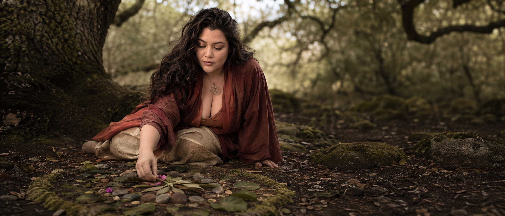

A conversation first. Always.
Begin Here is the entry to working with Adi Marie. Three ways to come close to the work, in order of depth. The conversation comes first, always.
Choose the door that matches where you stand.
The conversation. The path for those exploring ongoing work. A substantive first hour, in sacred reciprocity.
Begin the conversation →A standalone session as a way to begin. If ongoing work follows, an Intake conversation comes next.
Read more →Slow letters from the practice. Sent with the seasons. Free, no obligation. The softest way to stay close.
Subscribe →Adi Marie carries a medicine basket woven from traditional herbalism, animist cosmology, somatic awareness, shamanic practice, and the sacred arts of ceremony. Sixteen years of devoted service, over a decade of initiation and study.
She works with doctors, medicine people, therapists, leaders, and those whose decisions shape the trajectory of this earth ship. Solo and in community.
Based in Southern California. Available worldwide for virtual work, in person for those called to the land.
Read the full story →The conversation itself is a paid one, held in sacred reciprocity. Rates vary by format — group, solo session, developmental arcs, classes, ongoing work. What is right is shaped in the Intake & Inquiry conversation, where the work itself begins to take form.
For those whose path allows fuller offering. Your reciprocity sustains the practice and supports those in need.
The standard. The conversation shapes what is right for the work and where you are.
For those whose path needs receiving. Work-trade, scholarship, and other arrangements held in trust.
Working with Adi is like having the most skilled, loving, ferocious medicine person as your guide. She sees what others miss, holds what others drop, and moves you through the underworld with uncommon grace. My life is unrecognizably more alive.
Every inquiry is read by hand. We take the time to understand what you're carrying before we respond.
A short introductory call. To feel the resonance, ask the questions, and see what shape the work might take.
If it's right for both of us, we design the container together. The work begins on your terms.
Slow letters from the practice. Sent with the seasons. Free, no obligation.